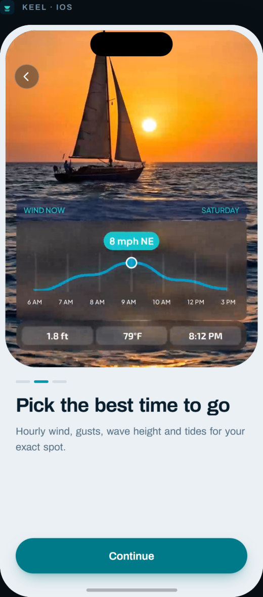
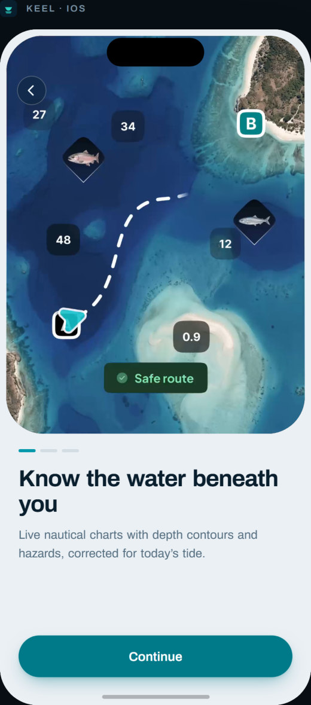
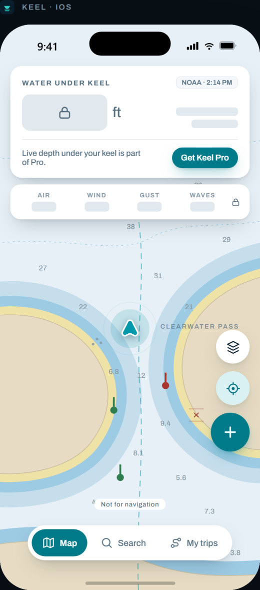
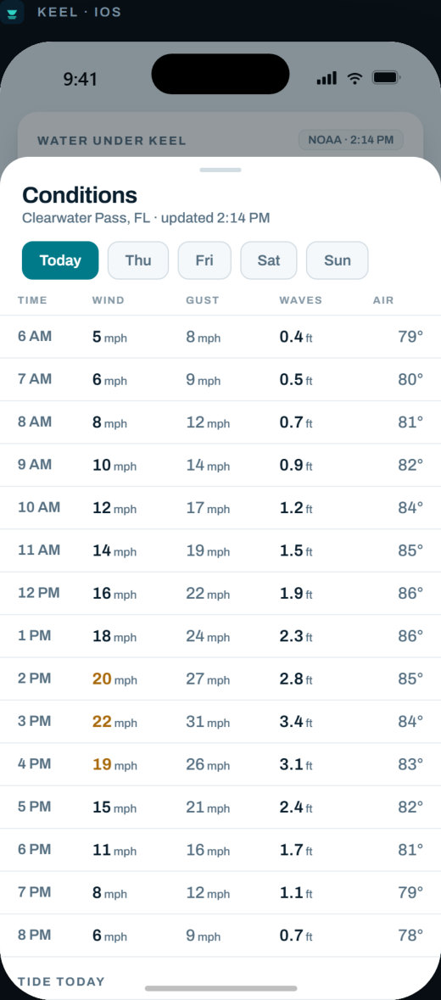
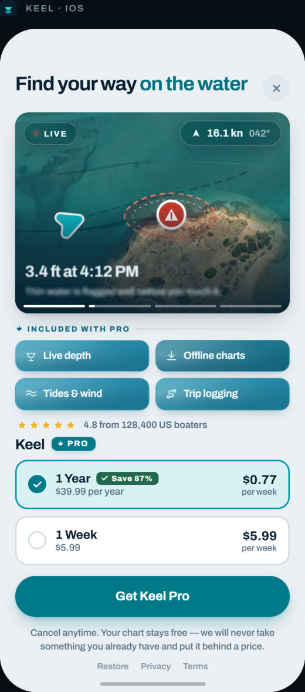

Keel
Deniz Navigasyonu · iOSTekneciler için deniz haritası uygulaması: derinlik konturları, gelgit ve hava koşulları tek yerde. Okyanus tonları ve okunaklı tablolarla, yoğun teknik veriyi sakin ve güven veren bir arayüze dönüştürdüm.
- Yıl
- 2026
- Kapsam
- Onboarding, harita, tahmin, paywall
- Renk




